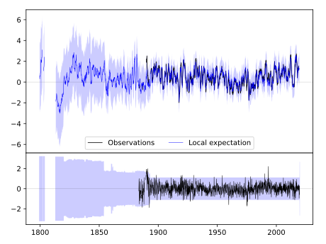
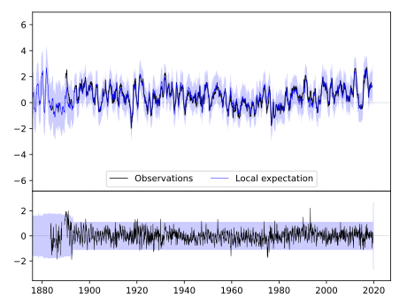
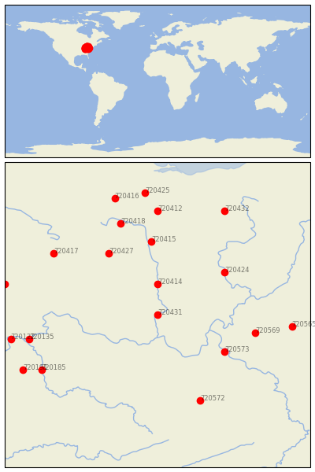

WAVERLY [USA]


| Neighbour | Name | Country | Distance | Lon/Lat | Years |
|---|
| 720431 | WAVERLY | USA | 0 | -83.0, 39.1 | 1883-2019 |
| 720414 | CIRCLEVILLE | USA | 55 | -83.0, 39.6 | 1893-2019 |
| 720573 | WINFIELD LOCKS | USA | 116 | -81.9, 38.5 | 1893-2019 |
| 720424 | PHILO 3 SW | USA | 122 | -81.9, 39.8 | 1893-2019 |
| 720427 | URBANA WWTP | USA | 130 | -83.8, 40.1 | 1854-2019 |
| 720415 | DELAWARE | USA | 133 | -83.1, 40.3 | 1893-2019 |
| 720569 | SPENCER | USA | 142 | -81.4, 38.8 | 1892-2019 |
| 720572 | WILLIAMSON | USA | 167 | -82.3, 37.7 | 1892-2019 |
| 720418 | KENTON | USA | 174 | -83.6, 40.6 | 1862-2019 |
| 720417 | GREENVILLE WTP | USA | 183 | -84.7, 40.1 | 1886-2019 |
| 720135 | VEVAY | USA | 187 | -85.1, 38.7 | 1864-2019 |
| 720412 | BUCYRUS | USA | 189 | -83.0, 40.8 | 1889-2019 |
| 720565 | GLENVILLE | USA | 191 | -80.8, 38.9 | 1893-2019 |
| 720185 | FRANKFORT DOWNTOWN | USA | 192 | -84.9, 38.2 | 1893-2019 |
| 720432 | WOOSTER EXP STN | USA | 210 | -81.9, 40.8 | 1864-2019 |
| 720122 | MADISON SEWAGE PLT | USA | 212 | -85.4, 38.7 | 1854-2019 |
| 720191 | SHELBYVILLE 1 E | USA | 215 | -85.2, 38.2 | 1888-2019 |
| 720416 | FINDLAY WPCC | USA | 219 | -83.7, 41.0 | 1886-2019 |
| 720131 | RUSHVILLE | USA | 222 | -85.5, 39.6 | 1883-2019 |
| 720425 | TIFFIN | USA | 223 | -83.2, 41.1 | 1873-2019 |